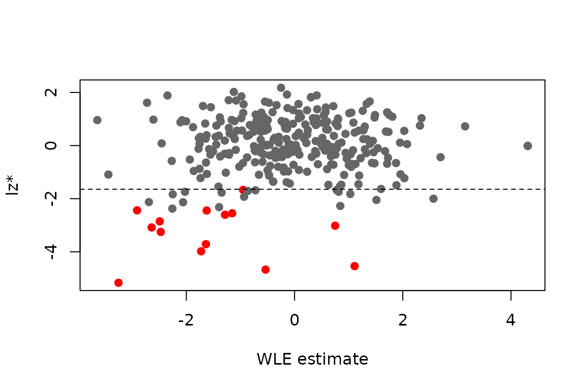
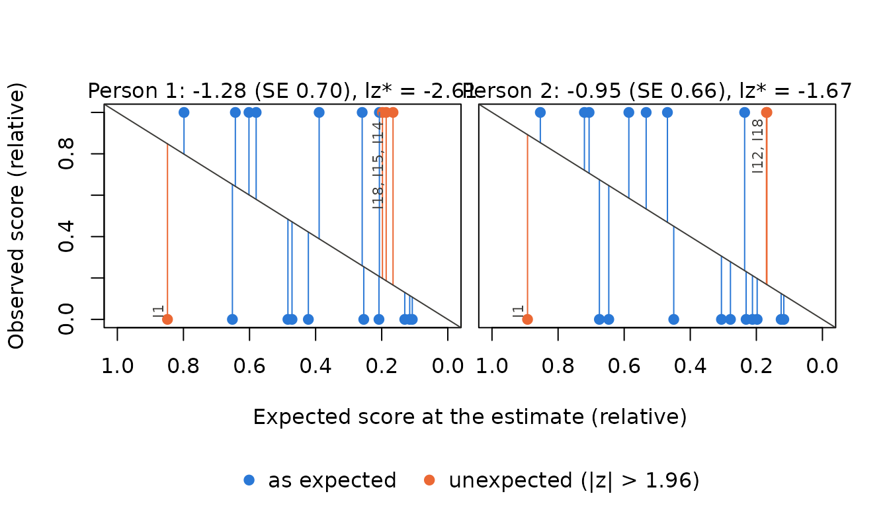

A person fit statistic tells whether the answers of a person fit the
model: a person who solves hard items but fails easy ones, who guesses,
or who stops working in the middle of a test, produces an unlikely
response pattern. Pfit() computes four statistics at the
ability estimate of each person:
- lz (Drasgow, Levine & Williams, 1985): the standardized log-likelihood of the response pattern. Negative values indicate misfit. lz is standard normal only if the true ability is known.
- lz* (Snijders, 2001): lz corrected for the estimated ability, so that it is asymptotically standard normal. PP uses the general form for dichotomous and polytomous items (Sinharay, 2016), with the correction for the estimation type used (MLE, WLE or MAP).
-
infit and outfit (Wright &
Masters, 1990): information-weighted and unweighted mean squares of the
standardized residuals, with an expected value of 1, and their
Wilson-Hilferty t transformations
in_tandou_t. Values above 1 (t > 0) indicate noisy answers; values below 1 indicate answers that are more predictable than the model expects.
All statistics are available for every model in PP (1PL to 4PL, PCM,
GPCM and mixed tests) and for estimates of type "mle",
"wle" and "map". Missing responses are
allowed; each person is assessed on the items they answered.
An example
We simulate a 3PL test of 20 items and 300 persons. Fifteen of them answer at random, a typical source of misfit.
library(PP)
set.seed(1337)
b <- seq(-2.5, 2.5, length.out = 20)
sl <- round(runif(20, 0.7, 1.6), 2)
la <- round(runif(20, 0.05, 0.2), 2)
x <- sim_4pl(beta = b, alpha = sl, lowerA = la, upperA = 1, theta = rnorm(300))
x[1:15, ] <- matrix(rbinom(15 * 20, 1, 0.5), 15) # random answersPerson fit needs the ability estimates first. Pfit()
takes the responses from the estimation object.
res <- PP_4pl(respm = x, thres = b, slopes = sl, lowerA = la, type = "wle")
fit <- Pfit(res, fitindices = c("lz", "lzstar", "infit", "outfit"))The result is a list with one matrix per statistic:
head(fit$lzstar)
#> lzstar
#> [1,] -2.605186
#> [2,] -1.668128
#> [3,] -1.357461
#> [4,] -3.713093
#> [5,] -2.444443
#> [6,] -2.853081
head(fit$infit)
#> infit in_t in_chisq in_df in_pv
#> [1,] 1.625991 2.309683 34.93681 19 0.0142135403
#> [2,] 1.377125 1.472791 31.72706 19 0.0335384353
#> [3,] 1.318834 1.230726 30.50388 19 0.0457257389
#> [4,] 1.844451 2.966306 44.54673 19 0.0007929319
#> [5,] 1.569338 2.146756 35.22195 19 0.0131313802
#> [6,] 1.630777 2.117259 42.59211 19 0.0014734269summary() gives an overview, including the number of
persons flagged at level alpha (two-sided, for lz, lz* and
the t values):
s <- summary(fit, alpha = 0.05)
#> Person fit at the wle estimates, 300 persons
#> flagged: |z| > 1.96 (alpha = 0.05)
#>
#> statistic n mean sd min max flagged
#> lz 300 -0.005794 1.1194 -4.60965 2.126 19
#> lzstar 300 -0.042582 1.2039 -5.16495 2.177 22
#> infit 300 0.990488 0.3081 0.09887 2.256 NA
#> in_t 300 -0.021450 1.0902 -2.80658 3.574 23
#> outfit 300 1.025970 0.7723 0.02701 8.672 NA
#> ou_t 300 0.094214 1.0135 -2.25657 3.344 21Misfit shows up as low values of lz*, so we use a one-sided test here. How many of the random responders does lz* find?
flag <- which(fit$lzstar[, "lzstar"] < qnorm(0.05))
flag
#> [1] 1 2 4 5 6 7 8 9 10 11 12 13 14 15 23 34 41 42 62
#> [20] 85 91 115 146 156 205 243 274 276 285 287
mean(1:15 %in% flag)
#> [1] 0.9333333
plot(res$estimates$estimate, fit$lzstar[, "lzstar"],
col = ifelse(seq_len(300) <= 15, "red", "grey40"), pch = 19,
xlab = "WLE estimate", ylab = "lz*")
abline(h = qnorm(0.05), lty = 2)
Which answers make these persons conspicuous?
plot(res, which = "profile") shows one panel per person:
each answered item is a point, with the expected score at the estimate
on the x axis (easy items on the left) and the observed score on the y
axis. Answers in line with the model lie close to the diagonal;
unexpected answers (|z| > 1.96) are marked and labelled, here right
answers to hard items and wrong answers to easy ones.
plot(res, which = "fit") draws the person fit map with the
two-sided flags of summary().
plot(res, which = "profile", person = flag[1:2])
Standard errors of the fit statistics
With SE = TRUE, Pfit() adds jackknife
standard errors of the statistics (columns lz_se,
lzs_se, in_se, ou_se): every
answered item is left out once, the ability is estimated again and the
statistic is recomputed.
Polytomous and mixed tests
The same call works for the (generalized) partial credit model and for mixed tests. Missing responses are skipped.
thres <- rbind(c(-1.5, -1, -0.5, 0, 0.5, 1),
c(0, 0.5, 1, 1.2, 1.5, 2))
xg <- sim_gpcm(thres = thres, alpha = c(1, 1.2, 0.8, 1.1, 0.9, 1), theta = rnorm(200))
xg[sample(length(xg), 100)] <- NA
resg <- PP_gpcm(respm = xg, thres = thres, slopes = c(1, 1.2, 0.8, 1.1, 0.9, 1), type = "mle")
fitg <- Pfit(resg)
summary(fitg)
#> Person fit at the mle estimates, 200 persons
#> flagged: |z| > 1.96 (alpha = 0.05)
#>
#> statistic n mean sd min max flagged
#> lz 192 0.1578 0.8033 -3.4951 1.491 3
#> lzstar 192 0.2084 0.9673 -3.7704 1.566 6
#> infit 192 0.8743 0.4459 0.1835 2.813 NA
#> in_t 192 -0.1827 0.9159 -2.3680 2.694 7
#> outfit 192 0.8546 0.4637 0.1903 2.759 NA
#> ou_t 192 -0.1346 0.8210 -2.1508 2.512 5Persons whose estimate does not have status "ok" (for
example "extreme" with MLE, or "boundary") get
NA. For persons who answered only one dichotomous item, lz*
is NA as well. PPass() computes the estimates
and the person fit in one step and returns them as one table
(vignette("ppass_erm")).
Interpretation
The lz and lz* values are interpreted as z values: the smaller (more
negative), the stronger the misfit. Persons below a critical value,
e.g. qnorm(0.05) = −1.64 one-sided, are flagged (Magis,
Raîche & Béland, 2012). summary() uses a two-sided
test, so it also counts persons with very high values, whose answers fit
better than expected. lz itself is not standard normal when the ability
is estimated (Molenaar & Hoijtink, 1990); its variance is too small,
so it flags too few persons. lz* corrects this and should be
preferred.
References
Drasgow, F., Levine, M. V., & Williams, E. A. (1985). Appropriateness measurement with polychotomous item response models and standardized indices. British Journal of Mathematical and Statistical Psychology, 38(1), 67–86.
Magis, D., Raîche, G., & Béland, S. (2012). A didactic presentation of Snijders’s lz* index of person fit with emphasis on response model selection and ability estimation. Journal of Educational and Behavioral Statistics, 37(1), 57–81.
Molenaar, I. W., & Hoijtink, H. (1990). The many null distributions of person fit indices. Psychometrika, 55(1), 75–106.
Sinharay, S. (2016). Asymptotically correct standardization of person-fit statistics beyond dichotomous items. Psychometrika, 81(4), 992–1013.
Snijders, T. A. B. (2001). Asymptotic null distribution of person fit statistics with estimated person parameter. Psychometrika, 66(3), 331–342.
Wright, B. D., & Masters, G. N. (1990). Computation of OUTFIT and INFIT statistics. Rasch Measurement Transactions, 3(4), 84–85.